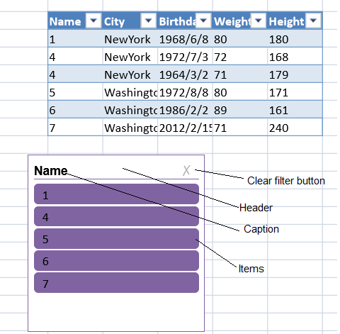

Slicers allow you to quickly filter data. A slicer provides filtering details without the need to use drop-down lists.
The TableSlicerData class provides table data and filtering information for the slicer.
The slicer has a header, a caption, items, and a clear button. You can move, resize, delete, cut, copy, paste, undo, or redo the slicer.

Items that are filtered out by another slicer are referred to as "has data items" and "no data items". Items that are filtered by the slicer are referred to as "selected items" and "unselected items".
| Item Type | Description |
| no data items | Items that have been filtered out by another slicer |
| has data items | Items that have not been filtered out by another slicer |
| selected items | Items filtered out by the slicer |
| unselected items | The item that has not been filtered out by the slicer |
The slicer synchronizes with the table filter. The following table changes cause changes in the slicer.
| Table Change | Slicer Change |
| modify data | Slicer items are changed |
| modify column name | Slicer caption is changed |
| add row | Slicer items are changed |
| add column | No changes |
| delete row | Slicer items are changed |
| delete column | The slicer connected to this column is removed |
| remove table | All slicers connected to this table are removed |
You can set options for the slicer with the Slicers class. You can also set options for the slicer with the FloatingObject class. You can specify whether the slicer is visible or locked (isVisible or isLocked methods). The isLocked method only has an effect if the sheet is protected.
You can add a slicer with the slicers.add method and remove a slicer with the slicers.remove method.
Resizing or moving a row or column can cause the slicer's location and size to change based on the settings for the dynamicMove and dynamicSize methods. The following table displays the result of the dynamicMove and dynamicSize settings.
| DynamicMove | DynamicSize | Result |
| true | true | Slicer is moved and sized |
| true | false | Slicer is moved, but not sized |
| false | true or false | Slicer is not moved or sized |
This example creates a table and adds a slicer.
| JavaScript |
Copy Code
|
|---|---|
//create a table datas = [ ["1", "NewYork", "1968/6/8", "80", "180"], ["4", "NewYork", "1972/7/3", "72", "168"], ["4", "NewYork", "1964/3/2", "71", "179"], ["5", "Washington", "1972/8/8","80", "171"], ["6", "Washington", "1986/2/2", "89", "161"], ["7", "Washington", "2012/2/15", "71", "240"]]; var table = activeSheet.tables.addFromDataSource("table1", 2, 2, datas); dataColumns = ["Name", "City", "Birthday", "Weight", "Height"]; table.setColumnName(0, dataColumns[0]); table.setColumnName(1, dataColumns[1]); table.setColumnName(2, dataColumns[2]); table.setColumnName(3, dataColumns[3]); table.setColumnName(4, dataColumns[4]); //add a slicer to the sheet and return the slicer instance. var slicer = activeSheet.slicers.add("slicer1",table.name(),"Name"); //change the slicer properties. slicer.width(200); slicer.height(200); slicer.position(new GC.Spread.Sheets.Point(100, 200)); slicer.style(GC.Spread.Sheets.Slicers.SlicerStyles.dark4()); |
|
This example creates a table and adds an item slicer.
| JavaScript |
Copy Code
|
|---|---|
//create table var dataSource = [ { Name: "Bob", City: "NewYork", Birthday: "1968/6/8" }, { Name: "Betty", City: "NewYork", Birthday: "1972/7/3" }, { Name: "Alice", City: "Washington", Birthday: "2012/2/15" }, ]; var table = activeSheet.tables.addFromDataSource("table1", 1, 1, dataSource); var slicerData = new GC.Spread.Sheets.Slicers.TableSlicerData(table) //create an item slicer var slicer = new GC.Spread.Sheets.Slicers.ItemSlicer("slicer", slicerData, "Name"); //Add the item slicer to the dom tree. //The "slicerHost" is the div you want to add the slicer's dom to. $("#slicerHost").append(slicer.getDOMElement()); ..... <div id="slicerHost" style="height: 300px; width: 50%"></div> |
|